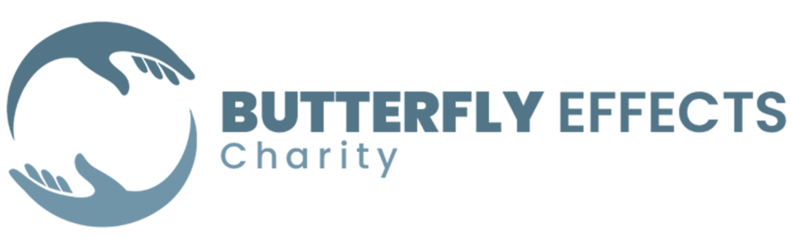

Familien stärken
Lebensmittel, Wohnraum, medizinische Hilfe, Kleidung und Wege in wirtschaftliche Selbstständigkeit.

Jetzt spendenHilfe, die Menschen stärkt
Gemeinsam schaffen wir Perspektiven für Familien, Kinder und Gemeinschaften – verlässlich, menschlich und nah an den Bedürfnissen vor Ort.
Bedarf zuerstHilfe beginnt mit genauer Prüfung.
Direkt & menschlichEngagierte Teams begleiten vor Ort.
Nachhaltig gedachtUnterstützung schafft neue Perspektiven.
Amanah · anvertraute Verantwortung
Helfen bedeutet für uns Barmherzigkeit, Verantwortung und Nähe. Jede Spende ist eine Amanah – ein anvertrautes Gut, mit dem wir sorgfältig und respektvoll umgehen. Unsere Hilfe richtet sich an Bedürftige, unabhängig von Herkunft oder Lebensweg.
Warum Butterfly Effects?
Hinter Butterfly Effects steht ein Ehepaar, das Hilfe nicht als anonymes System versteht, sondern als persönliche Verantwortung. Aus islamischen Werten, familiärer Nähe und menschlichem Mitgefühl ist eine Gemeinschaft von Ehrenamtlichen entstanden, die Menschen konkret und langfristig begleitet.
Mehr über unseren AnsatzWas wir tun
Lebensmittel, Wohnraum, medizinische Hilfe, Kleidung und Wege in wirtschaftliche Selbstständigkeit.
Waisenpatenschaften, Schuluniformen, Mahlzeiten und Bildung für einen geschützten Start ins Leben.
Handpumpen und Brunnenanlagen mit 8, 12 oder 16 Wasserhähnen für ganze Gemeinschaften.
Deutsch-türkische psychosoziale Beratung für Kinder, Jugendliche, Paare, Familien und ältere Menschen.
Nähmaschinen, Schneidereipakete sowie Ziegen-, Schaf- und Hühnerfarmen als Hilfe zur Selbsthilfe.
Kurban, Ramadan-Hilfspakete, gemeinsames Fastenbrechen und Bayram-Geschenke.
Ein internationales Netzwerk engagierter Menschen in Deutschland, der Schweiz, Bosnien und der Türkei.
Seminare, Familienbildung, interkulturelle Begleitung und spirituelle Seelsorge.
Aktiv helfen
Wählen Sie den Bereich, in dem Ihre Unterstützung wirken soll.

Mit Brunnen und nachhaltiger Versorgung schaffen wir Gesundheit und Perspektiven.
Projekt entdecken ↗


Bildung eröffnet Wege aus der Abhängigkeit und stärkt ganze Gemeinschaften.
Projekt entdecken ↗Psycho-soziale Beratung
Butterfly Effects begleitet Kinder, Jugendliche, Erwachsene, Paare und Familien in belastenden Lebensphasen – persönlich, kultursensibel und auf Deutsch oder Türkisch.
Beratungsangebot entdeckenKonkrete Hilfe
Auswahl bestehender Spendenmöglichkeiten der Organisation.
Kindern und Familien zum Fest eine besondere Freude schenken.
Jetzt helfen ↗Sauberes Wasser für Menschen, die bisher keinen sicheren Zugang haben.
Brunnen spenden ↗Monatlich oder jährlich verlässliche Fürsorge und Perspektiven ermöglichen.
Patenschaft ansehen ↗Konkrete Bildungsbausteine für einzelne Kinder oder eine ganze Klasse.
Bildung schenken ↗Familien erhalten Werkzeuge, Tiere und Wissen für eigenes Einkommen.
Selbsthilfe fördern ↗Hilfspakete, Iftar und religiös verantwortungsvoll begleitete Kurban-Spenden.
Alle Möglichkeiten ↗ Hilfe auf Augenhöhe
Hilfe auf AugenhöheWirkung, die sichtbar wird
Jedes Projekt folgt klaren Grundsätzen: Bedürftigkeit prüfen, Dringlichkeit bewerten, Hilfe gerecht verteilen und langfristigen Nutzen schaffen.
Kennzahlen gemäß bestehender Website; vor Veröffentlichung bitte aktuell bestätigen.
Aus der Gemeinschaft
Von Lebensmitteln und Kleidung bis zu kleinen landwirtschaftlichen Projekten: Familien werden nicht nur versorgt, sondern nachhaltig gestärkt.
Mehr erfahren ↗Menschen aus verschiedenen Städten und Ländern bringen Zeit, Erfahrung und Herz ein.
Mitmachen ↗Direkt helfen
Wählen Sie einen Betrag oder unterstützen Sie ein konkretes Projekt. Jeder Beitrag zählt.
Gemeinsam mehr erreichen